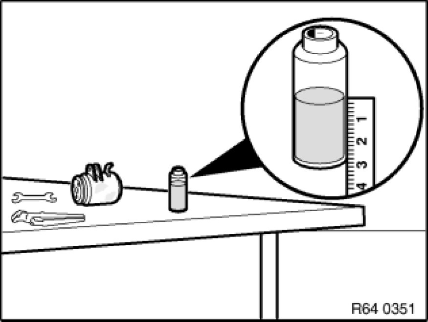

Instructions for Compressor Replacement
64 52 ... - Instructions for compressor replacement

Important!
Compressors with plastic belt pulleys:
- Avoid impacts/knocks to plastic belt pulley (caused by tools, contact with base).
- Return faulty compressors in their original packaging only.
Important!
When starting up a new compressor for the first time, it is absolutely essential to carry out the following breaking-in procedure:
- Switch on A/C system
- Set all air vents in instrument cluster to "OPEN"
- Start engine and let it stabilize at idle speed
- Set blower output to min. 75% of max. blower output
- Switch on A/C system and run for at least 2 minutes at idle speed (risk of damage at higher speed!)
When evacuating the air-conditioning system, refrigerant oil is also extracted and collected in the oil separator of the service station.
After evacuation, the refrigerant must be filtered in the service station as the oil separator could still contain a liquid refrigerant/oil mixture. The filtering process gasifies the refrigerant completely and only the previously bound refrigerant oil remains in the oil separator. Measure and note down this quantity of refrigerant oil,
refer to Evacuating A/C system Drawing off, Evacuating and Filling A/C System (R 134a).
Transfer the refrigerant oil remaining in the previous compressor via the filler plug completely into a measuring container.

Measure the amount of refrigerant oil collected from the previous compressor.
The new compressor is filled at the factory with refrigerant oil. Open filler plug and pour entire contents of compressor into a clean container.
Installation Note:
Replace sealing ring and moisten with refrigerant oil.
Observe tightening torque, 64 52 2AZ [1][2]Compressor HVAC.
From the new compressor, pour the same amount of refrigerant oil (as drained from the previous compressor) + 10 g extra into a clean measuring container and pour again into the new compressor.
Remaining refrigerant oil can be poured into service station tank,
refer to Evacuating A/C system Drawing off, Evacuating and Filling A/C System (R 134a).
Otherwise the excess refrigerant oil must be disposed of correctly.
On account of its hygroscopic properties, refrigerant oil must not be stored in open containers.
The refrigerant oil drawn off from the oil separator of the service station and from the previous compressor must not be reused and must be correctly disposed of.
After installing the new compressor, it is essential before filling the A/C system to pour the same amount of the previously drawn off refrigerant oil into the system again,
refer to Evacuating A/C system Drawing off, Evacuating and Filling A/C System (R 134a).

Installation Note:
If A/C system is opened for more than 24 hours: Replace drier bottle/drier insert.